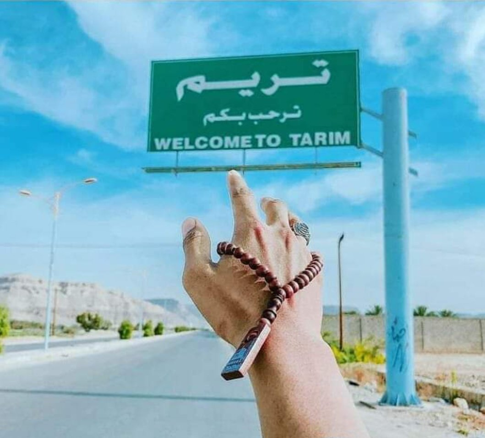
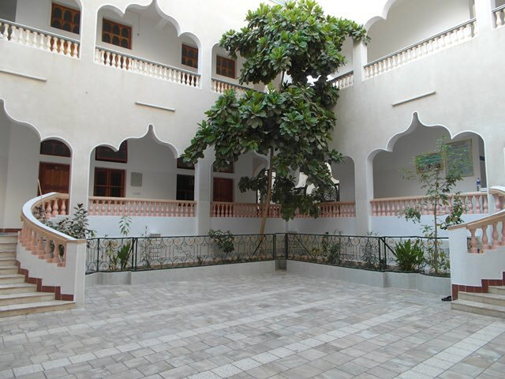
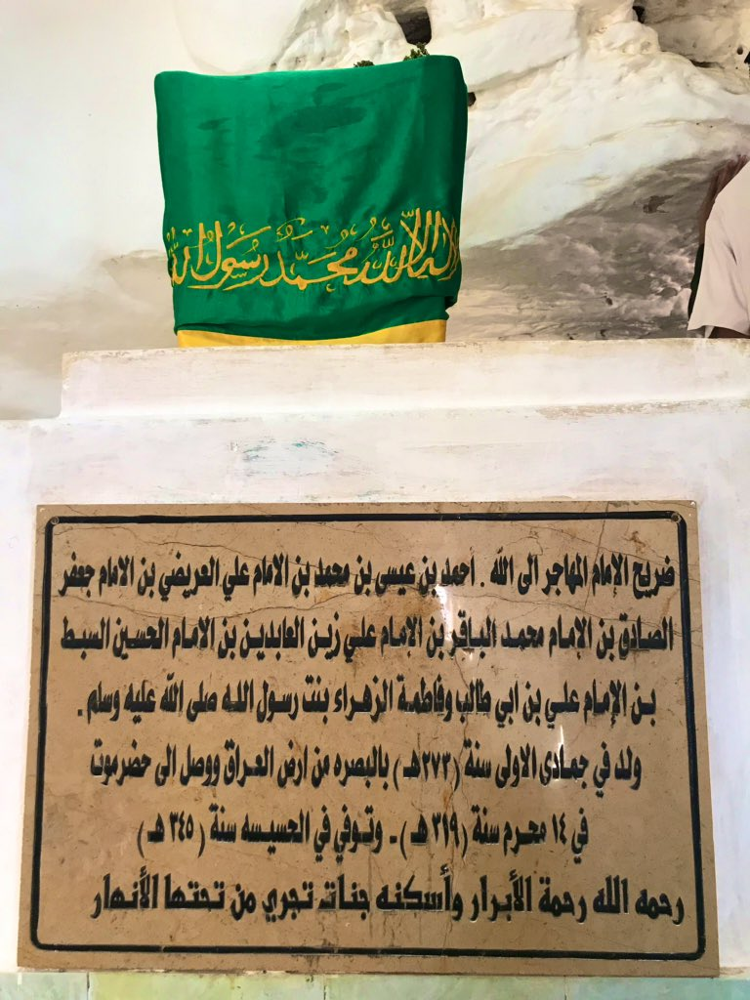
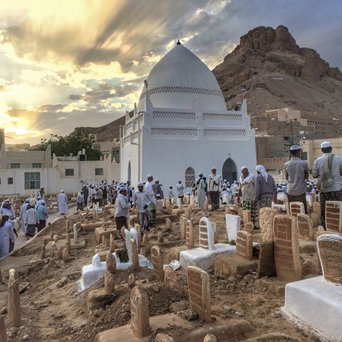
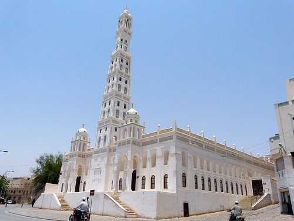
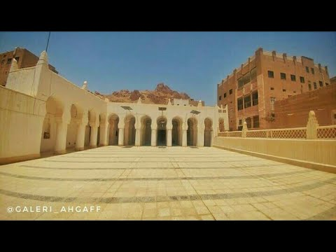
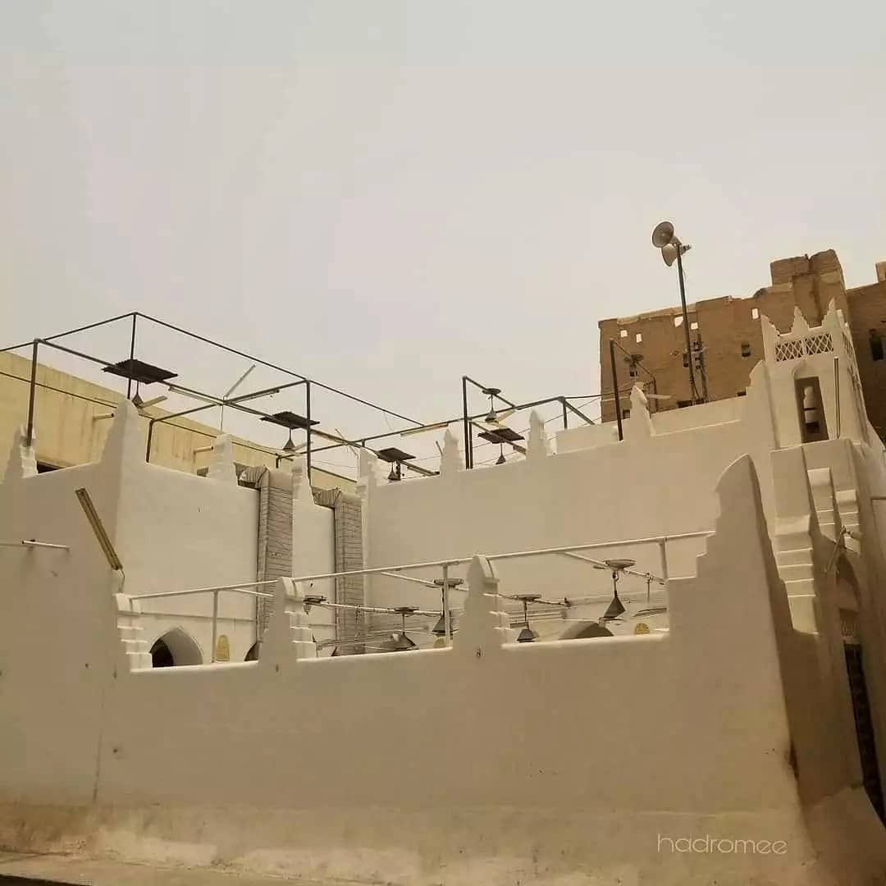

Kota Impian
Tarim adalah salah satu kota kecil nan tua yg terletak sekitar 1150 Km dari ibukota Yaman, Sana'a. Secara geografis, kota ini terletak di sebuah lembah yg diapit oleh gunung gunung gundul. Tarim adalah sebuah kota yg tergolong subur dan Makmur. Walaupun curah hujan rendah namun persediaan air di daerah ini sangat cukup. Luas kota ini sekitar 2.325 Km2. Nama "Tarim" diambil dari nama seorang penguasa yg pernah berkuasa di kota ini, yaitu Tarim bin Hadhramaut yg diyakini hidup 3 ribu tahun sebelum agama islam diwahyukan. Kota ini merupakan salah satu kota terpenting dalam sejarah kebudayaan islam. Dinobatkan oleh salah satu lembaga resmi PBB yg bergerak di bidang Pendidikan Sains dan Kebudayaan Islam ( IESCO) sebagai kota kebudayaan islam di Tahun 2010 memang sangat layak dan pantas. Kenapa tidak? Kota mungil yg dihuni oleh kurang lebih 100 ribu jiwa inj sangat sarat akan nilai religius, sehingga ia menjadi kota kebudayaan Islam utama di Provinsi Hadhramaut, bahkan di yaman secara keseluruhan. Semenjak dahulu, Penduduk Tarim dikenal kukuh berpegang Teguh terhadap Agama. Memiliki karakter Amanah, kanaah, rendah hati, tawaddu' adalah ciri khas masyarakat kota As Siddiq ini. Kota As Siddiq, Al Ghanna, Kota Seribu Wali dan kota kebudayaan islam adalah beberapa sebutan populer kota ini. Mata Pencaharian warga setempat terbilang beragam. Ada yg berprofesi sebagai petani, pedagang, pengrajin, dll. Salah satu jauhar yg menjadikan kota tua ini istimewa adalah kenyataannya bahwa kota ini merupakan Markaz Besar Para Sayyid Ba' alawi, yaitu anak cucu Rasulullah Saw yg sangat kuat memegang ajaran serta tradisi salaf sampai saat ini. Iklim cuaca di sana jika panas maka akan sangat panas dan jika dingin maka akan sangat dingin. Suasana di Kota Tarim adalah tradisional dan tidak gemerlap. Jangan membayangkan jika berada disana pada malam hari akan seru, nyatanya tidak. Listrik dan jaringan internet nya susah. Oleh karena itu, di malam hari jalanan Kota Tarim menggunakan lampu yang berwarna kuning, dimana daya listriknya tidak terlalu besar. tidak semua jalan ada lampu nya. Selain itu, di Tarim itu suasananya membuat kita untuk semakin semangat dalam beribadah, karena disana tidak ada orang yang membuka aurat, tidak ada baliho yang terpajang di jalanan. Kota ini juga sangat strategis untuk dijadikan tempat belajar.
Beberapa tempat yang wajib dikunjungi pada saat berkunjung ke Kota Tarim, yaitu :
- 1. Daar Zahra
- 
-
Darul zahra adalah sebuah tempat yang paling ingin aku tempati. Dimana disana terdapat banyak sekali hal yang dapat bermanfaat bagi kehidupan dunia, terlebih lagi akhirat. Di Darul Zahra ini merupakan tempat dibina dan didirikan pada tahun 1418 /1998 M dan diresmikan pada tahun 1422 H/2001 M. Darul Zahra merupakan sebuah pusat pengajian khusus bagi muslimat dari dalam maupun luar negara. Bagi para pelajar muslimat yang berkeinginan untuk melanjutkan pengajian ke Darul Zahra perlu mendaftarkan diri terlebih dahulu dengan mengisi formulir di dalam laman web darul zahra.
- 2. Makam Imam Muhaajir
- 
-
Nama lengkap beliau adalah Ahmad bin Isa bin Muhammad bin Ali al-uraidli bin Ali Zainal Abidin bin Husen bin Ali bin Abi Thalib Radhiyallahu 'anhu. Beliau tokoh berpengetahuan tinggi, disiplin ilmu, dan kaya raya.Hingga sangat disegani di Basroh kala itu. Beliau hijrah dari Irak ke Yaman demi menyelamatkan aqidah anak cucunya kala itu. Beliau hijrah ke negeri Hadramaut. Beliau adalah Habaib pertama di Hadramaut. Oleh karena itu, ketika rang ziarah ke Tarim tempat ini lah pertama dikunjungi. Ketika imam muhajir di irak, beliau melihat seorang anak muda di kalangan ahlul bait, dia ini ketika mau berwudhu, ternyata di wudhukan oleh seseorang, jadi airnya itu di kucurkan oleh seseorang dan imam muhajir melihat itu pengen mengubah hal itu, jangan sampai ahlul bait kena fitnah dunia, gemerlap dunia dan akhirnya imam muhajir mengajak anak tsb hijrah. dalam proses hijrahnya beliau, beliau datang ke husaisah. 2 ilmu yg imam muhajir sebarkan yakni ilmu tanam dan ilmu konstruksi, ngajarin orang orang gimana cara bangun rumah, bangun masjid, beliau memakmurkan daerah itu. dan akhirnya yang tadinya tandus menjadi banyak orang orang yang menimba ilmu disitu, dan dibawah maqbarohnya imam muhajir adalah ribath muhajir tempat orang orang yang belajar. Beliau wafat pada tahun 345 H. di usia kurang lebih 85 tahun. Jenazah Beliau dikebumikan di Bukit Husaisah.
- 3. Zanbal
- 
-
Zanbal biasa disebut dengan Pusara Sejuta Aulia. Tempat ini juga dikenal sebagai pemakaman ‘seribu wali’, sebab ru]ibuan Aulia di kebumikan di sini. Di tempat ini, ada 3 kubah, yaitu:
Kubah Al-Habib Abu Bakar bin Abdillah Basyumaileh, di sisi timur.
Kubah Al-Habib Abdullah bin Syaikh Al-Aydrus , ujung barat.
Kubah Imam Abdullah bin Abi Bakr Al-Ayderus, di tengah.
Di Pemakaman Zanbal juga ada sebuah tanah yang diberikan tembok di sekelilingnya, di dalam ada makam 70 pasukan yang diutus oleh Sayyidina Abu-Bakar As-Siddiq di bawah pimpinan Ziyad bin Labib Al-Anshari untuk memberantas kemurtadan kala itu di Hadramaut.
- 4. Al-Fath, Masjid Imam Haddad>
- 5. Masjid Muhdhar
- 
-
Masjid ini adalah masjid favorit ku. Masjid yang merupakan jantung sekaligus menjadi ikon uniknya Kota Tarim. Masjid ini dibangun oleh ulama besar Tarim yaitu Imam Umar Al-Muhdar, putra Imam Abdurrahman As-Segaf. Arsitek dari masjid ini adalah Syaikh Awadh bin Salman Afif At-Tarimy. Menara pada masjidii merupakan salah satu keajaiban dunia, yaitu sebuah Menara tertinggi di Tarim bahkan di dunia.Menara ini terbuat dari tanah liat yang di campur dengan jerami.
- 6. Masjid Ba'alawi
- 7. Masjid Al-Wa'al
- 
-
Masjid ini dibangun pada abad 9H. masjidini mekipun terlihat sedrhana, namun ini adalah masjid tertua yang ada di Tarim. Masjid ini dibangun oleh seorang tabi’in yang mulia, yaitu Ahmad bin ‘abbad bin Bisyr Al-Anshory Al-Ausi yang merupakan cikal bakal keluarga Al-Khatib dimasa sekarang.
- 8. Masjid Assegaf
- 
-
Adalah masjid yang didirikan oleh al-Imam Abdurrahman Assegaf pada tahun 768 H yang terletak didekat masjid ba'alawi. Masjid ini terletak di sebelah barat Masjid Ba’lawi di lengkapi dengan 4 tiang utama, menaranya juga gak terlalu tinggi. Uniknya dari masjid ini adalah tidak ada atap permanen, yang ada hanya pipa pipa besi sebagai penutup disaat sedang hujan. Kegiatan di masjid Assegaf,pada hari senin dan kamis diadakan pembacaan "Hadrah Assegaf" yang dihadiri ulama-ulama tarim. Keistimewaan masjid Assegaf adalah semua orang yang membaca al-Qur'an secara istiqomah dan menghafalnya, niscaya akan diberkahi semua hajatnya juga akan terpenuhi, apalagi dilakukan disepertiga malam / antara maghrib dan isya. Sehingga sampai sekarang kegiatan setoran al-Qur'an masih terus dilestarikan dimasjid Assegaf ini.